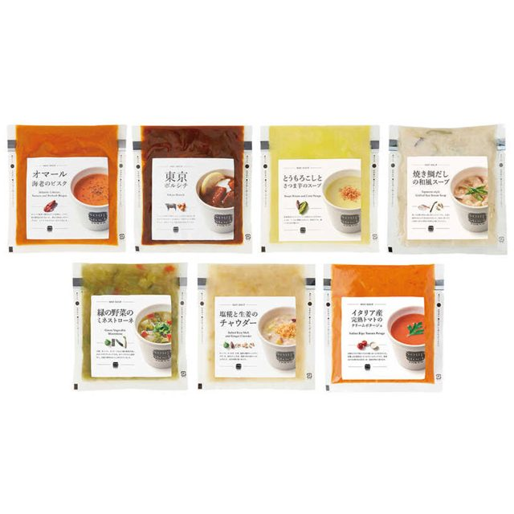
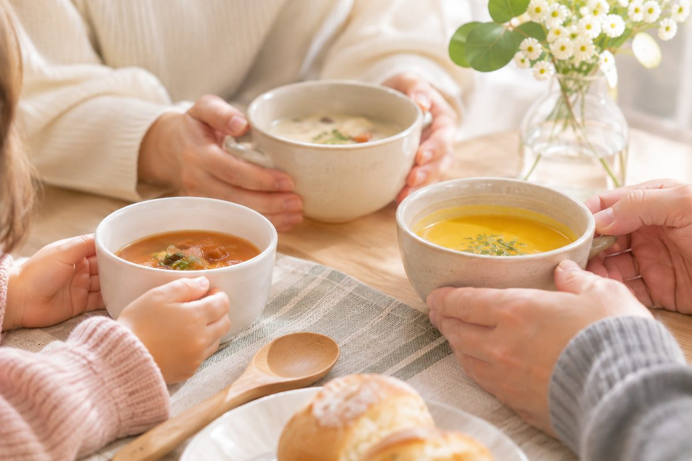

なぜ「食事」は二人目で評価されるのか
二人目の出産祝いで贈る側がいちばん困るのは、「もうだいたい揃っている」ことです。ベビー用品は1人目の在庫とお下がりがあり、定番の品ほど被ります。
その点、食事ギフトは構造が違います。在庫にならず、被っても消費され、置き場所も取りません。当サイトが集計したX（旧Twitter）上の受け取り体験の具体投稿では、食事系ギフトは嬉しい9件に対して、困った側の具体投稿が0件でした。子育てメディアの調査（おもちゃいろ・ママ100人）でも、「食事宅配・家事代行券」がもらって嬉しかったものに入っています。
理由は時期にあります。2人目の産後は、赤ちゃんの世話に加えて上の子の食事と生活リズムを回す時期と重なります。本人の食事が後回しになりがちなタイミングで、「温めるだけで食べられるもの」が届くこと自体が支援になる、というのが受け取り側の声の構図でした。
この記事は、出産祝いの総合ランキング記事（「二人目の出産祝いは何が正解？」）で3位に入れた食事系ギフトを、タイプ別に深掘りするものです。

贈る前に決める、3つの分岐
食事ギフトの失敗は、品物選びより「相手の状況とのズレ」で起きます。先に次の3つで分岐してください。
- 保存形態（冷凍か、常温か）：冷凍品は冷凍庫の空きが前提です。空きが読めない相手、里帰り中で受け取り日が読めない相手には、常温保存できるフリーズドライを選ぶと渡し方の自由度が上がります。
- アレルギーと授乳中の食材：外からは分かりません。聞ける間柄なら、出産報告への返信のついでに一言確認するのが確実です。聞けない場合は、原材料が単純で、避けたい食材を選び分けやすい詰め合わせ型が無難です。
- 誰の食事になるか：産後のママ本人の回復食として贈るのか、家族全員の夕食の足しにするのかで、量と内容が変わります。上の子も一緒に食べる前提なら、子どもが食べやすい味付けのものを含むセットが向きます。
 タイプ1：冷凍スープ（Soup Stock Tokyo など）
タイプ1：冷凍スープ（Soup Stock Tokyo など）
今回の集計で、食事系ギフトの中で唯一、ブランド名が繰り返し挙がったカテゴリです。Soup Stock Tokyo の冷凍スープは、複数の受け取り投稿で名指しされ、「困ったらこれを送っておくれ」「送っておけば間違いない」といった、他人へ推薦する文脈で語られていました。贈る側の「手抜きに見えないか」という不安に対して、受け取り側の実例が最もはっきり否定しているのがこのタイプです。
- 例：Soup Stock Tokyo「出産祝いのギフトセット」（スープ・カレー8個入）税込5,830円＋送料（2026年11月14日時点・大丸松坂屋オンラインストア掲載価格）。楽天市場では、セット内容の異なるバラエティ7種詰合せ（税込5,400円・2026年11月16日時点）等もあります。
冷凍品なので、分岐1のとおり冷凍庫の空きが前提です。また、セット内容（カレーの有無など）は販売店ごとに異なるため、リンク先で内容を確認してから選んでください。

 タイプ2：フリーズドライ（常温・日持ち）
タイプ2：フリーズドライ（常温・日持ち）
冷凍庫問題を避けたいときの受け皿です。フリーズドライの味噌汁・スープの詰め合わせは常温で保存でき、賞味期限も長いため、里帰り中の家庭や、渡す日程を調整しにくい相手にも向きます。Xの集計ではアマノフーズのフリーズドライも名指しで挙がっていました。
- 例：アマノフーズのフリーズドライ詰め合わせ（味噌汁・雑炊・にゅうめん等22食入）税込5,130円（2026年11月16日時点・楽天市場掲載価格）。Soup Stock Tokyoのフリーズドライセットは3,540円〜（2026年11月14日時点・大丸松坂屋オンラインストア掲載）もあります。
「軽い・小さい」ため、上の子へのプチギフト等と組み合わせて贈る同梱枠としても使いやすいタイプです。湯を注ぐだけで食べられる手軽さが、このタイプの強みです。

常温の選択肢を広げる：スープとレトルト
常温で贈れるのはフリーズドライだけではありません。分岐1（保存形態）で「常温」を選ぶ場合の具体名を、もう2つ挙げておきます。
野菜をMOTTO：常温スープのもう一つの本命
野菜をMOTTOのスープは、カップのまま電子レンジで1分温める常温保存タイプです。出産祝い限定デザインのボックスに入った野菜スープ6個ギフトセットがあり、国産野菜を使い、保存料・合成着色料・うま味調味料は不使用とされています。賞味期限は製造から約9か月で、お届け時は3か月以上あるものが届く案内です。冷凍のSoup Stock Tokyoと並べると、「冷凍で贈るか、常温で贈るか」の両側に具体名が揃います。
- 例：野菜をMOTTO 野菜スープ6個ギフトセット（出産祝いボックス）税込4,666円＋送料（2026年11月20日時点・公式オンラインストア掲載価格。10,800円以上の購入で送料無料）。なお、このボックス自体がギフト仕様のため、別途のラッピング・熨斗には対応していません。
無印良品のカレー：レトルトという第4の型
もう1つ、形の違う常温品としてレトルトカレーを挙げます。無印良品「素材を生かしたカレー」は湯煎・レンジで済み、家族全員で消費できるタイプです。当サイト運営者の実体験でも、出産祝いに無印のカレーをもらって嬉しかったという実例があります（受け取り側の声の集計とは別枠の、運営者の実例として紹介します）。
- 例：「素材を生かした 辛くない 国産玉ねぎと豚肉のカレー」180g×10個セット 税込3,320円＋送料500円（2026年11月20日時点・楽天市場 無印良品公式店の表示で確認）。賞味期限は製造日から365日。「辛くない」シリーズは上の子ともシェアしやすい味付けです。種類によって価格が異なるため、リンク先で確認してください。
なお、無印良品の公式ネットストアは2026年11月6日から全サービスを停止しているため（2026年11月20日時点）、購入導線は楽天市場の公式店が現実的です。
タイプ3：冷凍惣菜・ミールキット
夕食そのものを肩代わりするタイプです。「食事宅配」が調査で評価されていることからも需要はありますが、当サイトの集計では、特定ブランドへの名指しの声は冷凍スープほど集まりませんでした。そのため本記事では、ブランドの推奨ではなく選び方の基準だけを示します。
- 上の子が食べる分量が含まれているか（大人2人分だけのセットは、2人目家庭では不足しがちです）
- 解凍・加熱の手間が「湯煎・電子レンジ」で完結するか
- 賞味期限と冷凍庫の占有量が、セットの個数と見合っているか
具体例：nosh（ナッシュ）の冷凍宅配弁当
上の基準に当てはまる具体例として、冷凍宅配弁当のnosh（ナッシュ）があります。糖質30g以下・塩分2.5g以下を目安に設計された弁当を、100種以上のメニューから選べるサービスです。加熱は電子レンジで完結し、家族の夕食をそのまま肩代わりする「タイプ3」の使い方に向きます。
- 価格：6食プラン 税込4,318円＋送料（2026年11月20日時点・公式FAQページで確認）。8食プラン5,157円、10食プラン6,206円もあります。
noshには配送先を指定して贈れるギフトの仕組みがありますが、定期購入が前提のサービスです。贈る場合は、受け取った後に定期の停止手続きが要ることを、メッセージに一言添えて伝えるのが親切です（停止方法の案内文面まで用意できると、受け取り側の負担が下がります）。また、ラッピングサービスはなく段ボールでの配送になる点と、冷凍庫の空きが前提になる点も、分岐1の確認とあわせて押さえてください。
ママ本人の回復食という選択肢
分岐3（誰の食事になるか）で「ママ本人」と決めた場合には、産後専用に設計された宅配食という選択肢もあります。一般の宅配弁当と違い、産後の回復期に必要な栄養を前提にメニューが組まれているタイプです。
ママの休食：産後ママ専用の冷凍弁当
ママの休食は、管理栄養士と産婦人科医の監修のもとで作られた、産前産後のママ向け冷凍弁当です。主菜・主食・副菜がワンプレートになっていて、電子レンジで約5分温めれば、容器がそのまま皿になる仕様とされています。「家族の夕食」ではなくママ本人の一食を確実に置き換える設計なのが、このタイプの特徴です。
購入は公式オンラインショップのみで、定期便が基本形です（購入回数の縛りはなく、1回で解約できるとされています）。ギフトとして贈る場合は、贈る側が申し込んで相手の自宅へ配送し、継続・停止の手続きの扱いまで含めて伝える設計にしてください。冷凍便（置き配不可）で届くため、受け取り日時の調整も必要です。セット内容と価格は変動することがあるため、公式オンラインショップで最新の内容をご確認ください。
予算別の目安
食事系ギフトの中心帯は3,000〜5,000円台で、出産祝いの関係性別の相場（友人・知人3,000〜10,000円、同僚3,000〜5,000円）の範囲に収まります。
| 予算 | 型 | 向く相手 |
|---|---|---|
| 3,000円台 | フリーズドライの詰め合わせ | 同僚・連名の按分、遠方で日程が読めない相手 |
| 3,000円台 | レトルトカレーのセット（無印良品など） | 常温で日程が読めない相手、家族全員で消費してほしい場合 |
| 5,000円前後 | 冷凍スープのギフトセット | 親しい友人、里帰りなし・自宅で育児中の家庭 |
| 5,000円前後 | 常温スープのギフトセット（野菜をMOTTOなど） | 冷凍庫の空きが読めない相手、里帰り中で受け取りが不安定な家庭 |
| 5,000円前後 | 冷凍宅配弁当（noshなど） | 家族の夕食ごと肩代わりしたい場合（定期の扱いを一言添えて） |
| 予算に余裕がある場合 | 食事ギフト＋上の子プチギフト（1,000〜3,000円）の同梱 | 2人目全般（満足度を上げる組み合わせ） |
金額そのものより、「産後の食事が回らない時期に、すぐ食べられるものが届く」という設計が評価の中心です。高額化するより、上の子への小さな同梱を足すほうが、2人目ギフトとしての完成度は上がります（上の子プチギフトの考え方は、総合ランキング記事の9位の節で詳しく書いています）。
食事ギフトが向かないケース
- 里帰りが長く、自宅で受け取れない：冷凍品は特に避け、常温品にするか、帰宅時期に合わせて配送日を指定してください。
- 食事制限・アレルギーの情報がまったく取れない：食品そのものを避け、ギフトカードや消耗品に切り替えるのが安全です（総合ランキング記事の1位・2位を参照）。
- 相手が料理を楽しみにしているタイプ：ミールキット等は「台所に立つ前提」の贈り物になります。回復を優先したい時期かどうかの見極めが必要です。
ママの本音コメント
※以下の声は、本文で紹介した公開アンケート・X上の受け取り体験から、印象に残った言葉をそのまま抜き出したものです。特定の個人への取材ではありません。
受け取り側の声：冷凍スープは人にも勧めたい
「困ったらこれを送っておくれ」
（タイプ1・冷凍スープの節より。Soup Stock Tokyoの冷凍スープを、受け取った側が他人へ推薦する文脈で語られていました）
受け取り側の声：冷凍スープは鉄板
「送っておけば間違いない」
（タイプ1・冷凍スープの節より。同上）

まとめ- 食事系ギフトは、受け取り側の集計で嬉しい9件／困った0件。「揃っている」2人目家庭でも在庫にならない、数少ないカテゴリです。
- 冷凍庫と受け取り時期が読める相手には冷凍スープ、読めない相手には常温のフリーズドライ、という分岐が選び方の軸です。
- 常温の具体名は、野菜をMOTTOのスープと無印良品のレトルトカレーまで広がりました。夕食ごと肩代わりするなら冷凍宅配弁当（noshなど）、ママ本人の回復を狙うなら産後専用の宅配食、という選び分けもできます。
- 予算は3,000〜5,000円台が中心。余裕があれば、金額を上げるより上の子へのプチギフトの同梱が効きます。
なお、この記事は「大人の食事」の話です。赤ちゃん本人の食事（離乳食セット）を贈る場合は、月齢と賞味期限の確認が別に必要になるため、専用の記事に分けました → 出産祝いに離乳食セットはあり？
この記事について
※この記事にはアフィリエイト広告（PR）が含まれます。記事内のリンクからご購入いただくと、当サイトに紹介料が支払われる場合があります。